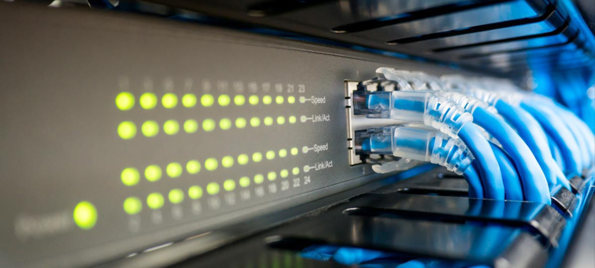

Equipo de Servidores
La Empresa de Telecomunicaciones "ComunicaTodo" le provee un equipo de Servidores segun el tipo de configuracion que usted haya
solicitado, ademas de darle un analisis completo de todos los computadores y demas equipos que usted desea conectar al servidor,
ademas de darle un personal que le dara con detalles todo lo necesario para que la red funcione y ademas de darle sugerencias de
como mejorar los servicios del servidor, como pueden ser: Almacenamiento en la nube, cableado estructurado y un closet de telecomunicaciones
y ademas de darle mas sugerencias en el analisis de la red.
Configuracion
Nuestra empresa le ofrece los servicios de configuracion de equipo, estas configuraciones se basaran en el tipo de red
que usted desea tener en su hogar, area de trabajo o empresa, este tipo de red se basara en la marca de routers, switches
y servidores que usted decidio comprar para haci poderlos instalar en toda su red. Añadiendo tambien que el equipo de personal
que usted mismo haya solicitado sera el que configurara la red e instalara todos los perifericos y equipos necesarios que usted
necesita.

Cotizacion
La cotizacion de la instalacion mas los gastos en mano de obra, la integracion de equipos nuevos y el cambio de
equipos antiguos por nuevos, la cantidad de datos y el tipo de cable usado para mayor envio de datos de un computador
o otro y la efectividad de la red son la cantidad de gastos que daran porcentado para la factura. Si desea saber la
cotizacion antes de hacer los gastos, le pedimos que ingrese a nuestro correo electronico: ComunicaTodo@gmail.com
o a nuestro numero de telefono: 1-500-7777 para solicitar un profesional que le cotize los gastos.